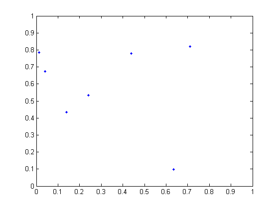
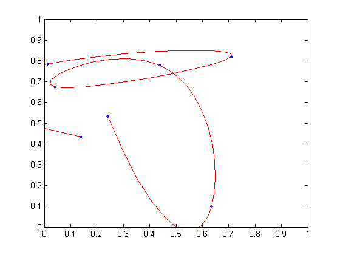

This demonstration interpolates data with a cubic spline in 2 dimensions. It uses MATLAB's SPLINE function. It does NOT use the Spline Toolbox, which is a complete set of functions for B-splines and other piecewise polynomials of any degree.
Randomly pick eight points. Plot them.
n = 7;
x = rand(n,1);
y = rand(n,1);
plot(x,y,'.')
axis([0 1 0 1])
 Interpolate the points with two splines by evaluating them with a finer spacing. Plot the interpolated curve with a red line.
t = 1:n; ts = 1:1/10:n; xs = spline(t,x,ts); ys = spline(t,y,ts); hold on plot(xs,ys,'r'); hold off